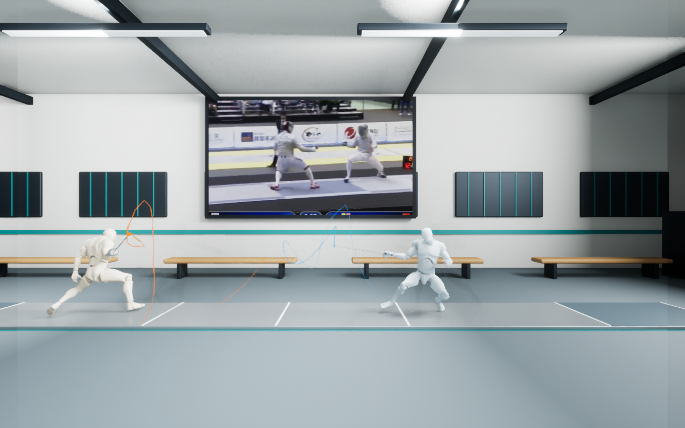

Keep the duel on the piste.
Resolve Blender-to-UE coordinate and unit conventions. Preserve forward movement, exclude the T-pose variant, and cancel lateral root drift with an actor-position track.
Connecting AI-assisted development, motion capture, 3D authoring, and a real-time engine into a fencing replay you can walk around.
Explore the integration ↓
A narrated demo video will be added here. For now, explore the actual UE captures above and the implementation below.
Browse the project on GitHub ↗My contribution is connecting the workflow end to end: choosing tools, translating requirements, handling mismatched asset conventions, and verifying the result. Select a stage to inspect its role and implementation evidence.
I used Codex, including Computer Use in my broader workflow, and GPT-6 Astra to help develop the 3D scene and integration scripts. I supplied the goals, source assets, and iterative requirements. The repository preserves Python and shell-driven implementation evidence; it does not include a Computer Use session recording.
The most useful decisions came when an asset or API output did not behave as the final experience required. Each fix became a repeatable part of the implementation.
Resolve Blender-to-UE coordinate and unit conventions. Preserve forward movement, exclude the T-pose variant, and cancel lateral root drift with an actor-position track.
Replace a black-screen media path with a 720p image sequence. Use a shared Sequencer clock, pad the final frame, and handle loop boundaries explicitly.
Attach sabres to the wrists, sample each 3D tip at 48 Hz, and fade its previous second of movement. Clear the history on restart to avoid false connecting lines.
Repeatable runtime checks make this more than an attractive scene. The latest saved test was run again after moving the complete project to another drive.
Maximum sampled video / sequence time difference in the latest saved Play test.
September 29, 2026 · Windows · UE 5.8.3 · GTX 1050 TiThe sword trails visualize the current 3D animation. They are not measured real blade-tip trajectories. Reconstruction errors can remain; blade bending, hit adjudication, and coaching accuracy are not implemented or validated.
This page is a screenshot-based case study with an interactive pipeline explorer. The full 3D walkthrough runs in Unreal Engine on Windows.
DeepMotion generation is an upstream workflow described by the project owner. The repository consumes its exported FBXs; the API client and credentials are not included. Audio is muted. Changes to motion or geometry require trail regeneration.